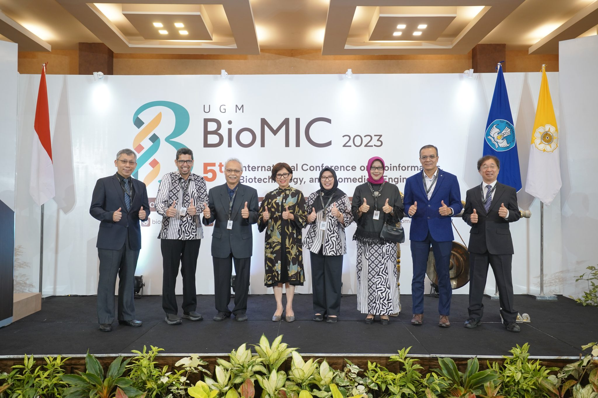
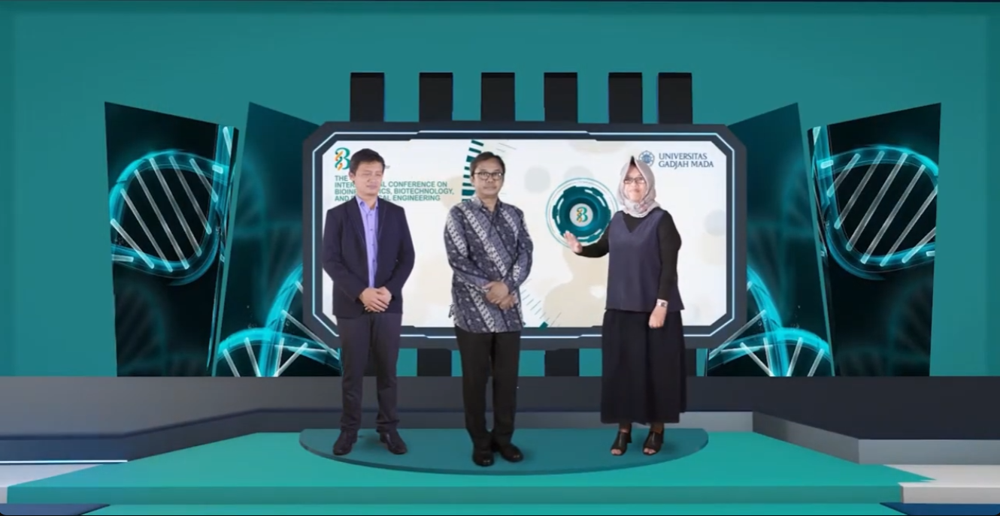
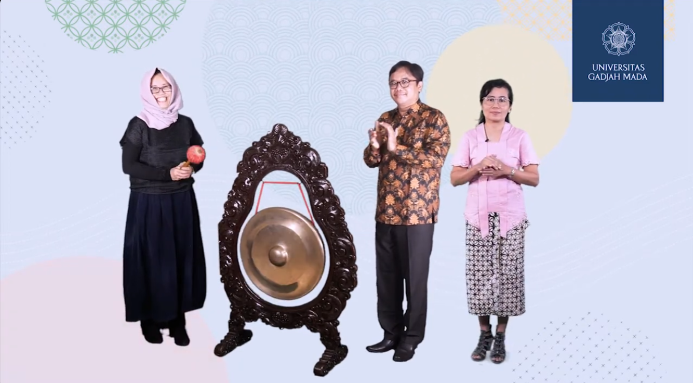
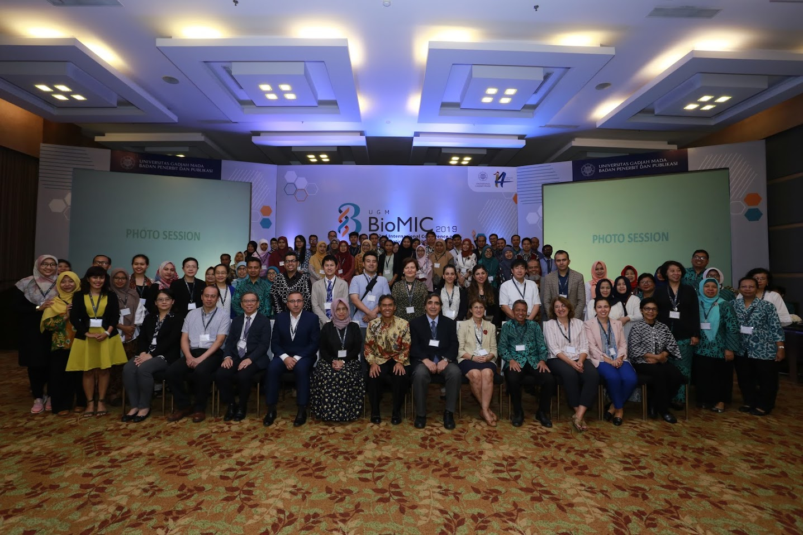
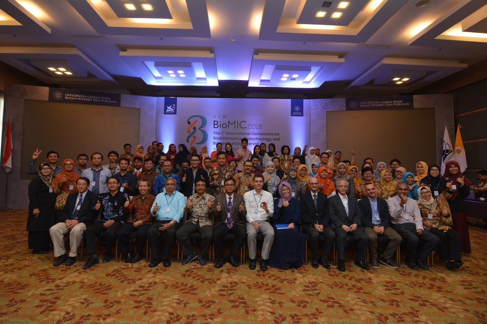

International Conference on
Bioinformatics, Biotechnology, and Biomedical Engineering
organizing history

BioMIC 2025
This year, five symposia have been held: the 3rd Big Data for Public Health Policy Symposium; the 3rd Bioinformatics and Data Mining Symposium; the 5th Biomedical Sciences and Engineering Symposium; the 6th Biomolecular and Biotechnology Symposium; and the 6th Drug Development and Nutraceutical Symposium.
The BioMIC 2025 has received over 391 submissions from 19 countries throughout the world. Selected papers that has been presented will be submitted for possible inclusion to journals/proceedings that are indexed by Scopus/CPCI/DOAJ: Indonesian Journal of Pharmacy (Scopus Q3), Indonesian Journal of Biotechnology (Scopus Q3).

BioMIC 2023
This year, the conference taken the theme “Accelerating translational healthcare by leveraging big data and machine learning” with five symposia: the 2nd Big Data for Public Health Policy Symposium; the 2nd Bioinformatics and Data Mining Symposium; the 4th Biomedical Sciences and Engineering Symposium; the 5th Biomolecular and Biotechnology Symposium; and the 5th Drug Development and Nutraceutical Symposium.
The BioMIC 2023 has received over 108 submissions from 8 countries throughout the world: Indonesia, Taiwan, Japan, Malaysia, United States, Iraq, Morocco, and Vietnam. Selected papers that has been presented has been submitted for possible inclusion to journals/proceedings that are indexed by Scopus/CPCI/DOAJ: BIO Web of Conferences (Scopus), Medical Journal of Malaysia (Regular issue, Scopus Q3), Malaysian Journal of Medicine & Health Sciences (Supplementary issue, Scopus Q4), Indonesian Journal of Biotechnology (Scopus Q4), Journal of Tropical Biodiversity and Biotechnology (Scopus Q4), Indonesian Journal of Pharmacy (Scopus Q3), Indonesian Biomedical Journal (Scopus Q3), Traditional Medicine Journal (Scopus).

BioMIC 2021
This year, the conference taken the theme “Artificial Intelligence, Big Data and Precision Healthcare: A Vision of the Future” with five symposia: Big Data for Public Health Policy Symposium; Bioinformatics and Data Mining Symposium; the 3rd Biomedical Sciences and Engineering Symposium; the 4th Biomolecular and Biotechnology Symposium; and the 4th Drug Development and Nutraceutical Symposium.
The BioMIC 2021 has received over 120 submissions from 13 countries throughout the world: Indonesia, Malaysia, Vietnam, Philippines, Thailand, Japan, India, Saudi Arabia, Germany, Italy, UK, Netherlands, and USA. The accepted and presented papers have been published to proceedings by BIO Web of Conferences (CPCI). Selected papers have been published to Medical Journal of Malaysia (Special issue, Scopus Q3), Malaysian Journal of Medicine & Health Sciences (Special issue, Scopus Q4), Indonesian Biomedical Journal (Scopus Q4), Indonesian Journal of Pharmacy (Scopus Q3), Indonesian Journal of Biotechnology (Scopus Q4), and ASEAN Journal on Science and Technology for Development (Sinta S1).

BioMIC 2020
This year, five symposia have been held: the 3rd Bioinformatics and Biological Data Mining Symposium; the 2nd Biomedical Sciences and Engineering Symposium; the 3rd Biomolecular and Biotechnology Symposium; the 3rd Drug Development and Nutraceutical Symposium; and the 2nd Public Health Symposium.
The BioMIC 2020 has received over 90 submissions. The accepted and presented papers have been published to journals/proceedings that are indexed by Scopus/CPCI/DOAJ/Sinta: BIO Web of Conferences, Indonesian Biomedical Journal, Indonesian Journal of Pharmacy, Indonesian Journal of Biotechnology, Indonesian Journal of Cancer Chemoprevention, Traditional Medicine Journal, and BKM Public Health and Community Medicine.

BioMIC 2019
This year, six symposia have been held: the 2nd Bioinformatics and Biological Data Mining Symposium; Biomedical Engineering and Technology Symposium; Biomedical Sciences Symposium; the 2nd Biomolecular and Biotechnology Symposium; the 2nd Drug Development and Nutraceutical Symposium; and Public Health Symposium. BioMIC 2019 has been held a satellite lecture in conjunction with East West Asia Biomaterials (EWAB) Congress.
The BioMIC 2019 has received over 130 submissions from 8 countries throughout the world: United Kingdom, Taiwan, Japan, Germany, Sri Lanka, Malaysia, France, and Indonesia. Selected articles presented in Bioinformatics and Biological Data Mining symposium and Biomedical Engineering and Technology symposium have been published in IEEE Conference Proceeding. Selected articles presented in Drug Development and Nutraceutical symposium have been published in Indonesian Journal of Pharmacy, Traditional Medicine Journal, or Indonesian Journal of Cancer Chemoprevention. Selected articles presented in related symposia have been published in Indonesian Journal of Biotechnology, Malaysian Journal of Medicine & Health Sciences, or Research Journal of Biotechnology.

BioMIC 2018
This year, five symposia have been held: Bioinformatics and Biological Data Mining Symposium; Biomedical Science and Engineering Symposium; Biomolecular and Biotechnology Symposium; Drug Development and Nutraceutical Symposium; and Genetic Resources and Uses Symposium.
The BioMIC 2018 has received over 130 submissions from 8 countries throughout the world: Malaysia, Romania, Australia, Japan, Pakistan, Austria, Hong Kong, and Indonesia. The accepted and presented papers have been published in the following journals/proceedings indexed by Scopus/CPCI/DOAJ/EBSCO/DIKTI: IEEE Xplore digital library; AIP Conference Proceedings; Indonesian Journal of Pharmacy; Indonesian Journal of Biotechnology; and Traditional Medicine Journal.